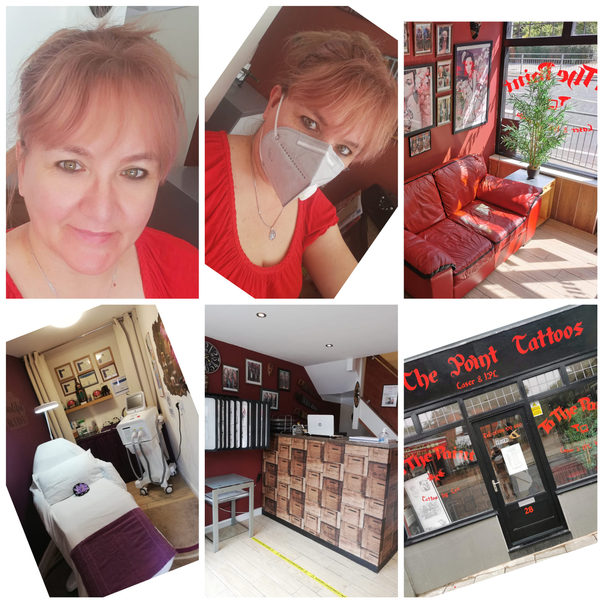
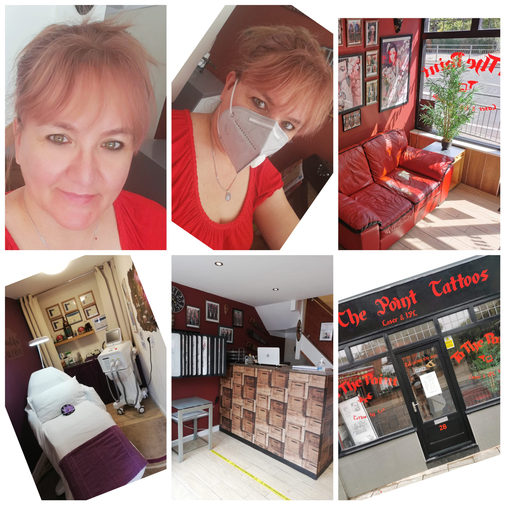

The Point Tattoo Studio is a tattoo and art gallery in Rugby, United Kingdom, with over twenty years of experience. The business proprietor, Les (Laszlo Bartha), is a tattoo artist with over 20 years of experience who has been running his own business for six years. His high-quality, one-of-a-kind tattoos helped him gain popularity and recognition nationwide. He made the salon a relaxing, welcoming, family-friendly environment for his clientele. Our Website, Facebook and Instagram can assist you in choosing a tattoo and you can also browse several styles in the sample works. If you want a tattoo cover-up, Les is an open and professional specialist who will advise you on the best option. We accommodate all clients, whether this is your initial experience with tattoos or you have years of experience under your belt. We aim to ensure that all individuals who enter our studio have a positive experience and are eager to return. So don't hesitate to pop by. We eagerly anticipate your visit to our studio.

Stella Laszlone Bartha has been a medical and Swedish massage therapist in the beauty industry for over ten years. After the practical treatments, she completed the theoretical and practical certification of laser treatments and obtained a laser practitioner qualification. As a co-owner of To The Point Tattoos Salon, she contributes to the salon's successful operation through tattoo removal with ND: YAG and hair removal with IPL. In addition to tattooing and hair removal, she is qualified for skin and facial skin rejuvenation treatments. She believes in providing a suitable treatment and beauty care experience for all our dear guests with free-of-charge, personalized professional advice. She awaits all dear customers with the appropriate treatment proposal.
 
